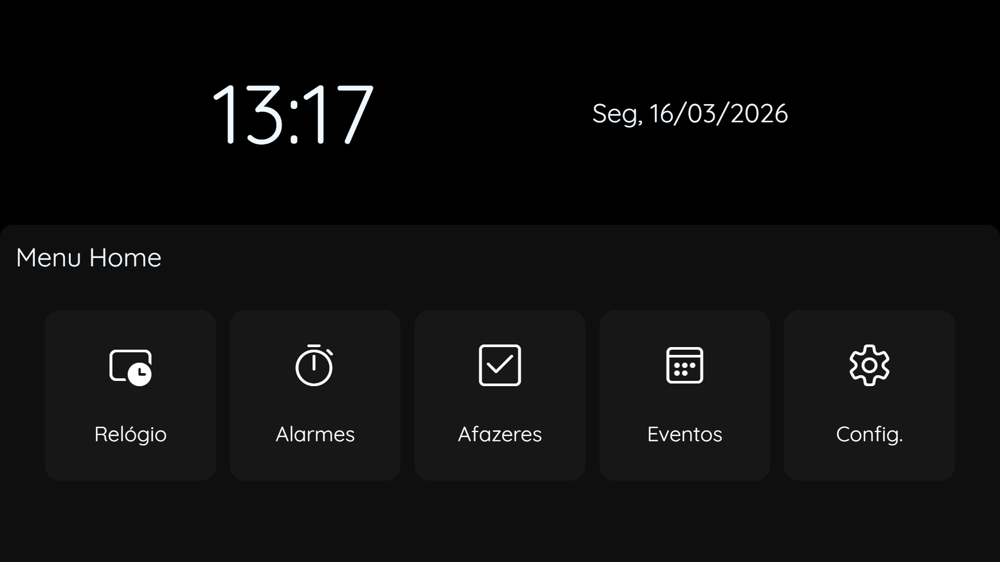

Bem-vindo ao Setup do WatchViewOS! Vamos iniciar o seu sistema corretamente
Importação de dados
Você tem algum arquivo .data do WatchViewOS?
Se você importar um arquivo do WatchViewOS, o setup automaticamente o arranjará e irá reiniciar já no
sistema
Caso não o tenha, aperte continuar para o setup te ajudar a arrumar o sistema
Configurações de Data e Hora
O Sistema é sincronizado pela API TimeAPI, uma API moderna de sincronização de tempo baseada em todas as GMT
possíveis
Personalização
Customize o sistema da forma que você quiser! Coloque imagens ou edite a cor de fundo do sistema e a cor
principal.
Papel de parede
Cor de destaque
Cor de fundo
Espelho do relógio
12:00Qui, 31/10/2024
Uso do sistema
O WatchViewOS tem algumas funções e usos para auxiliar no seu uso ao sistema:
Alarmes
Programe alarmes para tocar em momentos específicos do dia e te alertar sobre alguma informação importante.
Afazeres
Tenha uma lista de afazeres própria no WatchViewOS, coloque eles e cheque se estão feitos ou não.
Eventos
Veja facilmente seus eventos de um dia específico, anotando eles e o sistema apresentará ele pra você quando
for o dia correto.
Sobre o Menu Home
O Menu Home é uma gaveta por onde você pode navegar pelos aplicativos do sistema e receber algumas
informações sobre os aplicativos e funcionalidades ativadas do sistema, como o Modo Não Pertube.
No total, o WatchViewOS conta com 5 aplicativos: Relógio, Alarmes, Afazeres, Eventos e Configurações.
Para abrir o Menu Home, aperte e segure na tela (em dispositivos com Touch) ou pressione o botão secundário
do seu mouse.
Para prosseguir, tente abrir o Menu Home.
Sobre o Menu Home
Você conseguiu abrir o Menu Home. Sempre que for abrir ou fechar ele, execute a mesma ação.
Caso os sons do sistema estejam habilitados, esse sempre será o som que ouvirá ao abrir o Menu Home.
De primeira, o Menu Home será assim:

Você pode customizar o Menu Home da sua vontade na página seguinte
Customização do Menu Home
Altere o Menu Home de acordo com a sua vontade.
Estilo do Menu Home
Finalização do Setup
O Setup fecha aqui, ao apertar em continuar, o sistema será reiniciado e você entrará no WatchViewOS.
Todas as configurações aqui feitas serão salvas e podem ser alteradas no sistema principal em suas áreas
específicas das configurações
Agradeçemos por experimentar e utilizar o WatchViewOS!
O WatchViewOS é completamente gratuito e licenciado pela licença Apache 2.0